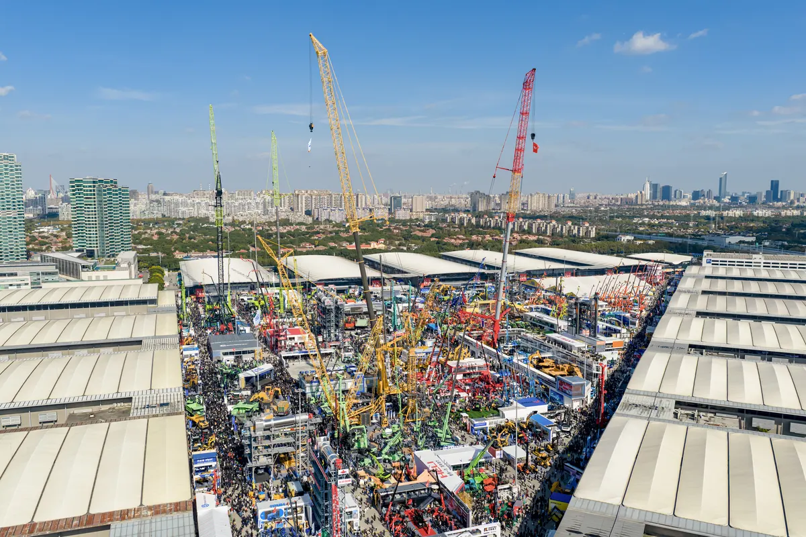

bauma CHINA 2026 in Shanghai: SANY’s excavator robot, XCMG mining equipment and Zoomlion’s electric concrete pump

A road crew with no cabs on its pavers or rollers, supervised by one person with a tablet, would have been hard to imagine a few years ago. SANY brought that technology to bauma CHINA 2026 in Shanghai. Outdoors, XCMG displayed a battery-electric mining truck, while Zoomlion presented an all-electric concrete pump truck with a 73-metre boom.
SANY shows an excavator robot and a cabless paving fleet
E-MOVE is SANY’s prototype all-electric excavator robot. In road construction, the company’s automation is already at work on job sites. Pavers lay the mix and rollers follow to compact it. The machines coordinate their movements, and one operator can supervise up to 15 of them with a tablet. According to SANY, its paving fleets have covered more than 5,000 kilometres on road projects since 2019.
XCMG presents its XDE260E battery-electric mining truck
At XCMG’s outdoor display, visitors stand beside the XDE260E beneath an excavator bucket raised over the truck body. Its size is easy to see. Less obvious is the battery drive that powers it through repeated trips from the working face to the unloading point. Other exhibits include the XE4000E hydraulic mining excavator, XC9260BEWD electric wheel dozer and XCA4000 crane.
Zoomlion electrifies a concrete pump truck with a 73-metre boom
Zoomlion combines an all-electric drive with a 73-metre placing boom. On site, the pump feeds concrete through a pipeline running along the boom sections, delivering the mix directly to the pour.
Zoomlion also presented a 300-tonne crawler crane with a distributed electric drive. Its mining demonstration paired machines with different power supplies. A cable-powered electric excavator in the 400-tonne class loads the ZT118EV driverless electric haul truck, which then makes its own way to the unloading point.
The show spans two venues in Shanghai. The Shanghai World Expo Exhibition & Convention Center is open from 23 to 26 November. Construction and mining machinery remains on display at the Shanghai New International Expo Centre through 27 November.